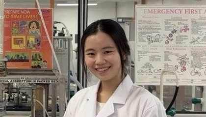
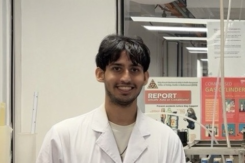

“To what extent can Physics-Informed Machine Learning (PIML) models trained on limited experimental data, with varying degrees of physics incorporation, inherently improve the accuracy and precision of modelling chemical engineering systems with limited physical knowledge?”

